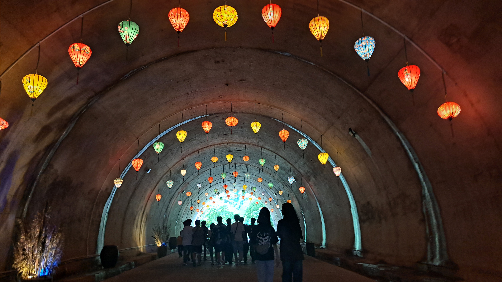
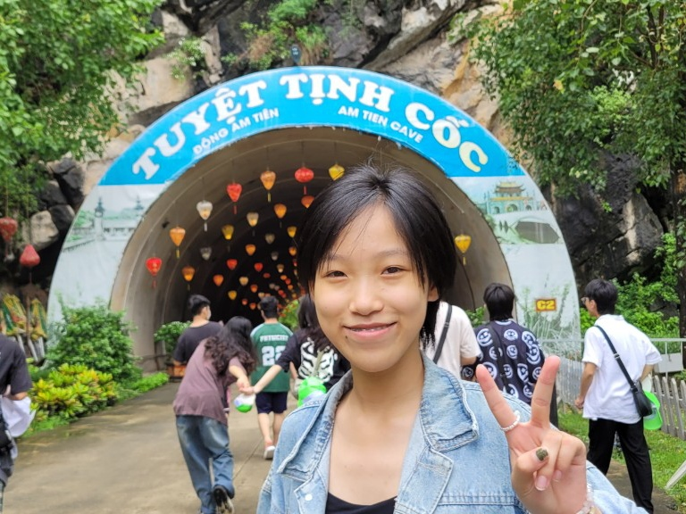
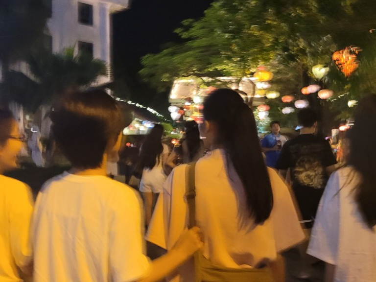

Mở đầu hành trình 2n1đ, tập thể lớp cùng ôn lại lịc sử tại đền thờ vua Đinh Tiên Hoàng. Chắc hẳn ai cũng đã nghe qua truyện 'cậu bé cầm bông lau phất vờ dẹp loạn 12 sứ quân', cậu bé mà ta nhắc đến chính là Đinh Bộ Lĩnh, ông dẹo loạn 12 Sứ quân và lên ngôi vua - vị vua đầu iên của triều đại nhà Đinh. Đến nơi đây, ta được hòa mình vào không gian linh thiêng, từ đó ta tưởng nhớ và biết ơn, yêu thêm lịch sử nước nhà.

Ngay sau đó, lớp đến vui chơi tại Tam Cốc - Bích Động hòa mình vào không gian thiên nhiên tuyệt đẹp và mát mẻ làm xua tan đi cái nóng của nắng tháng 6.


Sau buổi tối GALA thân mật, lơp tản bộ tại khu vực Phố cổ Hoa Lư....